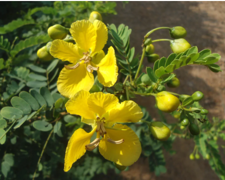

4. State Flower: Tangedu Puvvu (Tanner’s Cassia)
Scientific Name: Senna auriculata.
Festival Connection: This bright yellow flower is the primary component of the Batukamma festival. Women use it to create floral stacks representing the Mother Goddess.
Meaning: It grows wild across the state and is believed to bring prosperity to women. Beyond its beauty, it is used in traditional medicine to treat ailments like fever.